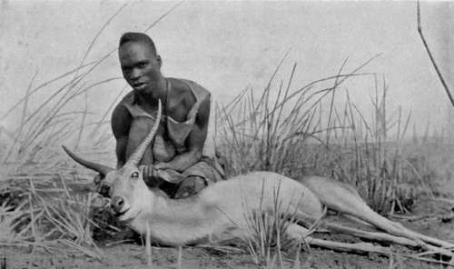

Chapter VIII - I.— Field Notes On The Game. Part 9
Description
This section is from the book "Wild Life In Central Africa", by Denis D. Lyell. Also available from Amazon: Wild Life in Central Africa.
Chapter VIII - I.— Field Notes On The Game. Part 9
Like other members of its genus they are fond of water, and in the rainy season the natives of Lake Bangweolo kill great numbers by driving them into deep water and then spearing them from canoes. The hoofs are long and well spread, and the females are hornless.
Bushbuck (Tragelaphus Scriptus)
Native Names
Chinyanja - Balala.
Chingoni - Mbawala.
Approximate weight, | ♂ | 1501b. |
Good average horns, | ♂ | 15in. curve. |
One of the prettiest of the medium-sized antelopes, and very plentiful in most parts of Central Africa, particularly so near the larger rivers. Along the Shire River they are abundant, and in the Luangwa Valley they are very plentiful indeed.
Red Lechwe - Photo by J. E. Hughes.
Reedbuck Ram Shot In Nyasaland
The skins are prettily marked with spots, and the old males get darker with age. Some of the younger animals are bluish, although the usual colour is a light brown.
The horns have often white or amber-coloured tips, and are prettily curved. Bushbuck have a bare patch on the throat which looks hairless, though if it is closely examined it will be seen to be covered with very fine short hairs. They abound in hilly country, and prefer fairly thick bush. The best head I had seen was one killed by a leopard near Gwazas, on the Shire River, in Nyasaland, and it measured 19¾in. on the curve, and was for long the record ; but lately, my friend, Mr. C. H. Timmler, showed me a head of a bushbuck he had bought at Chinde, and, on measuring it, I found that it gave 19⅞in. on the curve, so it is evidently the record.
Bushbuck are sporting animals, which usually give the sportsman some trouble to find. At times they bark just like a dog, and they often make this noise when disturbed at close quarters by human beings or carnivorous animals. Their flesh is very good eating.
Reedbuck (Cervicapra Arundinuni)
Native Names
Chinyanja.....Mpoyo.
Chingoni.....Shangu (sometimes Mpoyo).
Approximate weight, | ♂ | 150lb. |
Good average horns, | ♂ | 13in. front curve. |
As its name implies, prefers reeds and grass country near water. Fairly common and well distributed, and often seen in small lots up to six or eight, although the usual number is from two to five animals.
When disturbed, gives a shrill call, which carries for some way and puts other game on the alert; so it is better, if stalking an animal, to give reedbuck a wide berth.
The skin is very thin, just like strong parchment, and the hair soft and fine. As reedbuck run they hold their tails up, and, as the tails are large and are white underneath, they will often be the first thing to catch the eye. The meat is soft and tender, but rather insipid, and I have noticed that it goes bad sooner than other meat.
The females are hornless, and weigh much less than the males.
Impala (Aepyceros Melampus)
Native Names
Chinyanja - Nswala.
Chingoni - Nswala.
Approximate weight, | ♂ | 110lb. |
Good average horns, | ♂ | 19in. front curve |
One of the most gracefully formed of the medium-sized antelopes, and very numerous and well distributed wherever there are large rivers. The presence of impala always denotes that water is near, and waterbuck, puku, and reedbuck are an index to the same conditions.
Impala are often found in large herds of from fifty to a hundred animals. They are particularly common in the Luangwa valley, and their numbers there are probably greater than any other species. They are of a pretty light brown or fallow colour, with white belly, and the heads of the rams, for the does are hornless, are a beautiful shape and nicely ringed. Their flesh is particularly good, being tasty and tender.
The males, at certain seasons, consort together, and sometimes a herd of over twenty will be seen. In a large herd there is not often more than one full-grown ram. When startled, impala often jump high into the air and give a kind of bark, as do bushbuck when frightened.
The variety found here is smaller in the body and horns than those found in British East Africa, and is known as Johnston's impala.
They inhabit pretty " park-like" country where they form lovely pictures of wild life.
I weighed a full-grown ram, and he scaled 110lb. (uncleaned).
Oribi (Oribia Scop Aria)
Native Names
Chinyanja - Choe, often Gwapi.
Chingoni - Chozimbi.
Approximate weight, | ♂ | 40lb. |
Good average horns, | ♂ | 4½in. straight |
These pretty little antelopes are usually found in couples and they are fond of open dambos, where they often remain during the day unless the sun is very hot, when they will retire into the thin bush, but they are very seldom found in very thick cover. As they are small bodied animals they are difficult to shoot unless fairly close ; and anyone who can get most of the oribi he fires at ought to do well on larger game.
Their skins are a reddish yellow with white belly, and a noticeable feature is their small neatly formed feet, which leave a track not unlike a miniature hartebeest's.
It is wonderful how seldom one sees a young one with any of the smaller antelopes, and I think they leave them behind in cover until they are almost the same size as the parents.
Oribi meat is tender but rather insipid ; their kidneys and liver are very good when fried fresh.
Klipspringer (Oreotragus Saltator)
Native Names
Chinyanja - Chinkoma
Chingoni - Chinkoma. (sometimes Gwapi).
Approximate weight, | ♂ | 35lb. |
Good average horns, | ♂ | 3¾in. straight |
The Boers call this little animal the " klipbok," which means stone buck, and rockjumper is the English meaning of the word klipspringer. The most noticeable features of these animals are the long wiry hair, which will come out with a hard stroke of the hand, and I have seen a bullet send a shower of hair away after its exit from the opposite side; also the small feet, which are only worn down in front, as the klipspringer lives mostly among rocks and hard ground, although they will often wander down to the lower ground in the evening, and I have sometimes seen their spoor in a native garden, near hilly ground. The Boers use the hair to fill saddles with, as it is said not to pack with use, and it is springy and light, in fact, just like small quills.
Continue to:
- prev: Chapter VIII - I.— Field Notes On The Game. Part 8
- Table of Contents
- next: Chapter VIII - I.— Field Notes On The Game. Part 10